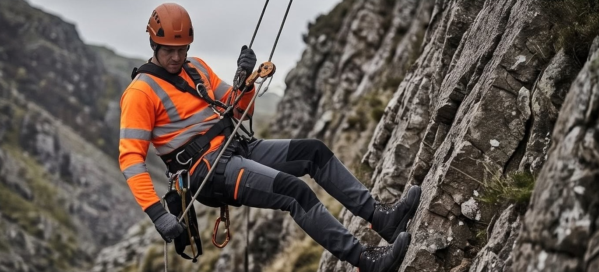

Kit that works as hard as you do.
SITESPEC makes technical workwear, headliners and PPE liners, designed in Scotland. We build for people who spend their days on a harness, on site or up a ledge, in all kinds of weather.
[Founders' words: who you are, where the idea came from, and why you started SITESPEC. A few honest sentences beat polished marketing.]

Zero-pinch
Harness work shows up every pinch point in a garment. We design seams and cuts so nothing digs in when you load up and move.
4-way stretch
Full range of movement, whichever way you reach, climb or crouch, without the kit fighting you.
Designed in Scotland
Our designs start in Scotland, where the weather is a daily test. [Add where the kit is made, if you want to say.]
What we make
- PPE liners: a skullcap liner and an anti-fog neck gaiter made to sit under a helmet, so you can keep working in UK weather.
- Hi-vis tops: polo, long-sleeve and quarter-zip tops engineered for harness work.
- Technical joggers: reinforced knees, zipped hip pockets and tapered ankle cuffs, in hi-vis orange or charcoal with orange accents.
Get in touch
Kitting out a crew, or just want to know what suits your job? Tell us what you need or find us on Instagram @sitespecworkwear.